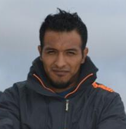
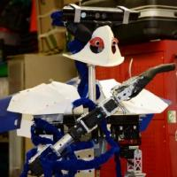
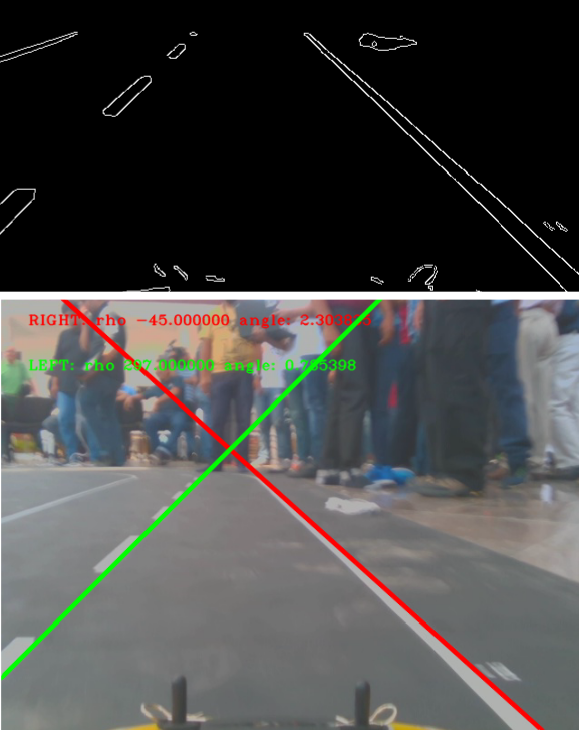

Abel
Pacheco Ortega
Research Engineer
I am a committed individual with a focus on applied computer vision and machine learning. I enjoy working in multidisciplinary teams and contributing to scalable, high-quality systems.
| abel.pachecoortega@outlook.com | |
| abelpachecoortega | |
| dougbel |
Education
Experience
Projects
Publications
Teaching
Education
| PhD (Computer Science) | 2018 – 2023 | |
|---|---|---|
| University of Bristol | ||
|
Developed methods for visual affordance recognition by combining 3D geometry with generative models to model
human-environment interactions. Focused on one-shot learning using variational techniques. Conducted
large-scale distributed evaluations using MPI on high-performance computing infrastructure.
Keywords: Machine Learning, Computer Vision, Statistics, Data Analysis, Scientific Writing, Collegiality, Scene understanding, 3D features, Distributed Systems, Message Passing Interface (MPI), CVAE, AWS (S3, Mechanical Turk) |
||
| Master in Engineering (Computing) | 2009 – 2011 | |
|---|---|---|
| Universidad Nacional Autónoma de México | ||
|
Implemented a visual place recognition and topological mapping system using RGB-D data. Created a custom
feature detector (FAST+3D) and a viewpoint-invariant descriptor, integrated into a robot localization
framework for indoor navigation.
Keywords: 3D vision, RGB-D, Feature description, Feature detection, Visual SLAM, Mobile robotics, Robot localization |
||
| Bachelor of Computer Engineering | 2009 – 2011 | |
|---|---|---|
| Universidad Nacional Autónoma de México | ||
|
Designed and developed an information system to automate the planning and management of engineering field
trips. The system streamlined authorisation and reporting processes for over 6,000 students per year,
improving efficiency and access to real-time data.
Keywords: Systems development, Process automation, Database design, Web technologies, Information systems, Software engineering |
||
Experience
| Computer Vision Research Engineer | January 2024 – April 2025 |
|---|---|
| Beam (formerly Rovco/Vaarst) | |
|
|
| Head of Systems Development | 2013 – 2017 |
|---|---|
| National Institute for the Evaluation of Education (INEE), México | |
|
|
| Lecturer / Teaching Assistant (Part-Time) | 2013 – 2023 |
|---|---|
| University of Bristol / Universidad Nacional Autónoma de México | |
|
|
| Research Developer (Part-time) | 2013 – 2017 |
|---|---|
| Universidad Nacional Autónoma de México | |
|
|
Projects
 |
AROS: Affordance recognition with one-shot human stances |
|
AROS is a one-shot learning method for predicting how highly-articulated human poses
interact with 3D scenes. The key idea is to model human-scene interactions using only a few pose examples,
without needing to retrain the model for new interactions. Given a 3D mesh of an unseen environment, AROS
predicts where interactions (affordances) can occur and generates realistic 3D human poses in context.
Keywords: Affordances, Scene understanding, 3D descriptor, human interactions, visual perception, Python |
| General Porpouse Service Robot (Justina) |  |
|
Robot Justina is a multidisciplinary project designed to assist people in domestic
environments. To achieve this, it uses advanced technologies such as speech recognition, computer vision,
autonomous navigation, and object manipulation.
I contributed to the design, implementation, and improvement of the perception system focusing on computer
vision. Keywords: Machine learning, Computer Vision, OpenCV, C++, Service Robots, Object Recognition, ROS (Robot Operating System), Multidisciplinary Projects |
|  | Vision-Based Lane Detection for Scale Model Autonomous Cars |
|
As part of the AutoModelCar challenge at the Robotics Mexican Tournament (TMR), which extends the
Urban Mobility Visions initiative by Dr. Raúl Rojas (Freie Universität Berlin), this
project focuses on developing a ROS-based visual lane detector for 1:10 scale autonomous vehicles. The
system processes camera input to estimate the vehicle’s position within the lane and assist with path
following. Keywords: Computer Vision, OpenCV, C++, ROS (Robot Operating System), Autonomous driving |
Publications
| Pacheco-Ortega, A., & Mayol-Cuevas, W. (2023). AROS: Affordance recognition with one-shot human stances. Frontiers in Robotics and AI, 10, 1076780. https://doi.org/10.3389/frobt.2023.1076780 | |
| Sarmiento, C., Savage, J., Juarez, A., Contreras, L., Pacheco, A., & Matamoros, M. (2019, April). Feature detection using Hidden Markov Models for 3D-visual recognition. In 2019 IEEE International Conference on Autonomous Robot Systems and Competitions (ICARSC) (pp. 1–6). IEEE. https://doi.org/10.1109/ICARSC.2019.8733651 | |
| Pacheco, A., Estrada, H., Vázquez, E., Martell, R., Hernández, J., Cruz, J., Silva, E., Savage, J., & Contreras, L. (2018). Intelligent flat-and-textureless object manipulation in service robots. In IROS 2018 Workshop: Towards Robots that Exhibit Manipulation Intelligence, IEEE/RSJ International Conference on Intelligent Robots and Systems (IROS), Madrid, Spain. https://doi.org/10.48550/arXiv.1809.03210 | |
| Savage, J., Contreras, L., Figueroa, I., Pacheco, A., Bermudez, A., Negrete, M., & Rivera, C. (2016). Construction of roadmaps for mobile robots’ navigation using RGB-D cameras. In Intelligent Autonomous Systems 13: Proceedings of the 13th International Conference IAS-13 (pp. 217–229). Springer International Publishing. https://doi.org/10.1007/978-3-319-08338-4_17 | |
| Contreras, L. A., Pacheco-Ortega, A., Figueroa, J. I., Mayol-Cuevas, W. W., & Savage, J. (2013, November). Object detection via receptive field co-occurrence and spatial cloud-point data. In 2013 16th International Conference on Advanced Robotics (ICAR) (pp. 1–8). IEEE. https://doi.org/10.1109/ICAR.2013.6766575 | |
| Figueroa, J., Contreras, L., Pacheco, A., & Savage, J. (2012). Development of an object recognition and location system using the Microsoft Kinect™ sensor. In T. Röfer, N. M. Mayer, J. Savage, & U. Saranlı (Eds.), RoboCup 2011: Robot Soccer World Cup XV (Lecture Notes in Computer Science, Vol. 7416, pp. 321–328). Springer. https://doi.org/10.1007/978-3-642-32060-6_37 |
Teaching
| Lecturer | |
|
Universidad Nacional Autónoma de México
Postgraduate Program in Engineering
|
|
| Teacher Assistant | |
|
University of Bristol
Department of Engineering Mathematics
|
|